Hierdie hoofstuk is hersiening van wat jy reeds weet oor hoe om voorwerpe met lug en water te beweeg. Jy gaan meer leer oor die verskille tussen pneumatiese en hidrouliese stelsels, en jy gaan leer hoe om hidrouliese stelsels te gebruik om met die toepassing van ’n klein krag ’n groot las te beweeg.
5.1 Die gebruik van water en lug om voorwerpe te beweeg 72
5.2 Dik en dun spuite 74
5.3 Verandering van groottes van kragte deur ’n hidrouliese sisteem 78
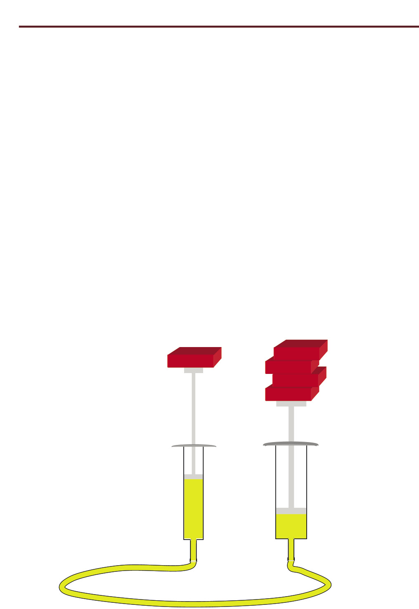Figuur 1
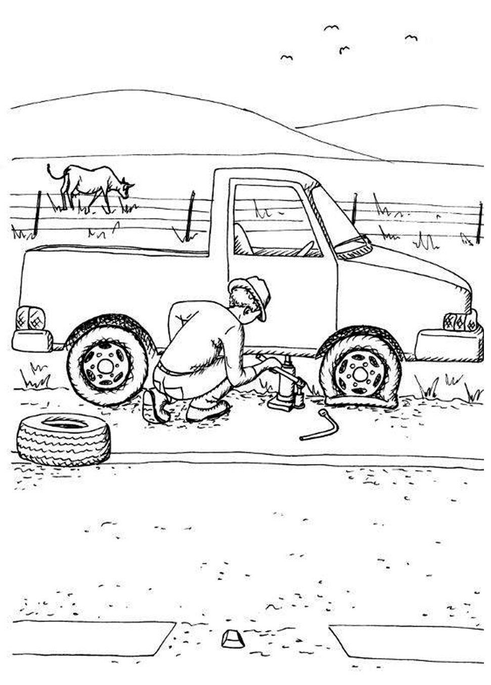
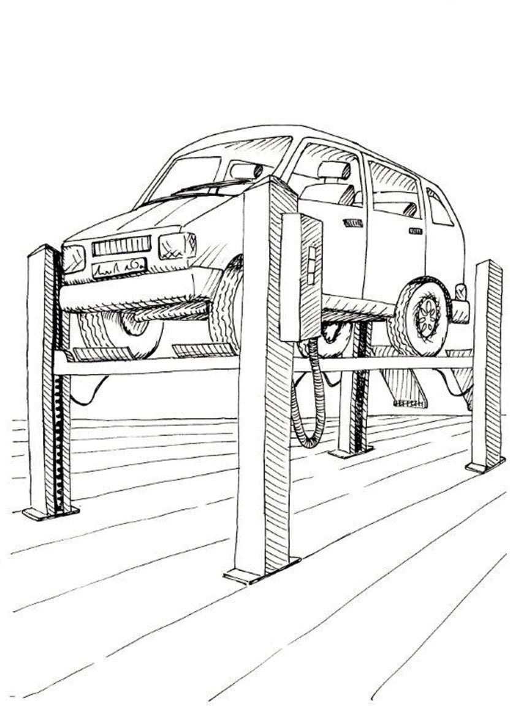
5.1 Die gebruik van water en lug om voorwerpe te beweeg
Saamdrukbare en onsaamdrukbare substansies
Die blou blikkie bevat opgefrommelde strooi, die rooi blikkie bevat water en die geel blikkie bevat sand.
 Figuur 4
Figuur 4
1. Dink jy dit is moontlik om die sand met ’n houtlepel saam
te druk sodat dit minder ruimte in die geel blikkie opneem? J/N
2. Dink jy dit is moontlik om die strooi saam te druk? J/N
3. Dink jy dit is moontlik om die water saam te druk? J/N
|
Strooi, gras en opgefrommelde papier is “saamdrukbaar”. Dit beteken dat dit saamgedruk kan word om minder ruimte in te neem. Sand is “onsaamdrukbaar”. Dit beteken dat dit nie saamgedruk kan word om minder ruimte in te neem nie. |
4. (a) Is water saamdrukbaar of onsaamdrukbaar?
(b) Is lug saamdrukbaar of onsaamdrukbaar?
(c) Hoe kan jy ’n spuit gebruik om die saamdrukbaarheid en onsaamdrukbaarheid van lug en water te ondersoek?
|
Lug is saamdrukbaar maar water is onsaamdrukbaar. |
Twee spuite wat met ’n rubberbuis verbind is, kan ’n “spuitstelsel” genoem word.
As die rubberbuis en die spuite met lug gevul is, word dit ’n “pneumatiese stelsel” genoem. As die rubberbuis en die spuite met water of olie gevul is, word dit ’n
“hidrouliese stelsel” genoem.

Figuur 5
5. As die suier aan die linkerkant ingedruk word, druk die suier aan die regterkant teen die hand. Sal die drukking op die hand met ’n pneumatiese stelsel dieselfde wees as met ’n hidrouliese stelsel? Verduidelik jou antwoord.
’n Pneumatiese en hidrouliese stelsel word hieronder gewys. In elke geval is die twee spuite presies ewe groot. Twee swaar voorwerpe rus op die regterkantse suiers.
 Figuur 6
Figuur 6
6. Wat sal met die blou voorwerpe gebeur as die linkerkantse suier in beide stelsels met 2 cm ingestoot word? Verduidelik jou antwoord.
5.2 Dik en dun spuite
 Figuur 7
Figuur 7
1. Die vrou met die groot vrag hoef net ’n klein afstand na haar huis toe te loop. Die vrou met die klein vrag moet nogal ver huis toe loop. Wie sal die moegste wees as sy by die huis aankom? Verduidelik jou antwoord.
Die prent hieronder wys ’n tweespuitstelsel met ’n dikker en ’n dunner spuit. Die stelsel is met water gevul totdat daar geen lugborrels meer was nie.
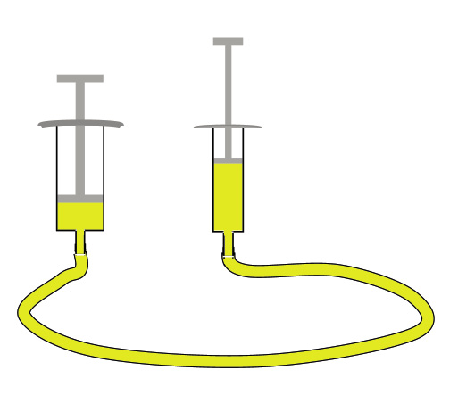Figuur 8
Aksienavorsing
Jy gaan nou meer aksienavorsing met twee spuite onderneem. Om dit te doen, moet jy ’n apparaat bou.
Kopieer hierdie liniale op ’n papiervel en heg hulle aan ’n stuk geriffelde karton, of ’n stuk karton van ’n graankosboks vas. Die lyne op die liniale is 2 mm van mekaar af.
Heg jou spuitstelsel, soos wat op die volgende bladsy gewys word, met kleefband aan die geriffelde karton of graankosboks vas.
As jy die suier aan die linkerkant indruk, sal die suier aan die regterkant uitbeweeg.
|
Die spuit waarvan jy die suier indruk, word die meestersilinder of insetsilinder van die stelsel genoem. Die silinder wat uitbeweeg, word die slaafsilinder of uitsetsilinder van die stelsel genoem. |
Jy gaan nou navorsing doen om te sien hoe ver die uitsetsilinder uitbeweeg as die insetsilinder oor ’n spesifieke afstand ingedruk word.
1. Trek water in die insetsilinder op, totdat dit byna vol is en plaas die suier regoor ’n merk op die liniaal.
2. Maak ’n klein merkie by die bopunt van die suier van die uitsetsilinder.
3. Druk die insetsilinder se suier 1 cm in.
4. Meet hoe ver die uitsetsilinder uitbeweeg het.
5. Skryf jou afmeting op die tabel hieronder.
6. Herhaal stappe 1 tot 4, maar druk nou die insetsilinder 2 cm in.
7. Herhaal al die stappe van 1 tot 4 vir afstande van 3 cm en 4 cm.
|
Insetsilinderbeweging in cm |
1 |
2 |
3 |
4 |
|
Uitsetsilinderbeweging in cm |
|
|
|
|
karton
Figuur 9
8. Dink nou aan die scenario waar jy die dik spuit die meestersilinder en die dun spuit die slaafsilinder gemaak het. Hoe ver dink jy sal die suier van die dun spuit beweeg as jy die suier van die dik spuit 1 cm indruk?
9. Voorspel ook wat sal gebeur as jy die suier van die dik silinder ’n ½ cm,
1 cm of 2 cm indruk. Skryf jou voorspellings in die tabel hieronder.
|
Dik meestersilinder se beweging in cm |
½ |
1 |
2 |
|
Dun slaafsilinder se beweging in cm |
|
|
|
10. As jy tyd het, doen meer navorsing om jou voorspelling na te gaan.
|
Dik meestersilinder se beweging in cm |
½ |
1 |
2 |
|
Dun slaafsilinder se beweging in cm |
|
|
|
|
Jy verrig werk wanneer jy die meestersilinder indruk. Die slaafsilinder verrig weer werk wanneer dit aan die ander kant beweeg. Die hoeveelhede werk aan die insetkant (meestersilinder) en aan die uitsetkant (slaafsilinder) moet dieselfde wees, want werk word nie sommer verniet verrig nie! |
11. Wat merk jy op? Jy het nou ondersoek hoe die afstand van beweging verander as jy die werk wat op een silinder verrig word na ’n ander silinder met ’n ander dikte oordra. Is dit slegs die afstand waaroor beweeg word wat verander? Plaas ’n vinger op die suier van die slaafsilinder wanneer jy die suier van die meestersilinder indruk. Doen dit op twee verskillende maniere, deur eers die dun spuit as die meestersilinder te gebruik, en dan die dik spuit as die meestersilinder te gebruik.
5.3 Verandering van groottes van kragte
deur ’n hidrouliese sisteem
Die prentjie wys ’n plastieksak wat met water gevul is. As jy jou linkerwysvinger liggies teen die sak sit en met jou regterwysvinger teen die sak druk, wat dink jy sal jy met jou linkerwysvinger voel?

As druk toegepas word op ’n buigbare houer gevul met vloeistof, word dieselfde druk orals in die houer gevoel. Die druk word deur die vloeistof “gelei” of “oorgedra”. Let wel: “Druk” is nie dieselfde as “krag” nie, alhoewel dit daaraan verwant is. ’n Paar eeue gelede het ’n man met die naam Blaise Pascal dit besef en daaroor geskryf. Dit staan as
“Pascal se beginsel” bekend.
Jy gaan nou ’n bietjie aksienavorsing doen om te ondersoek hoe druk deur water oorgedra word. Om dit te doen benodig jy dieselfde spuitstelsel op karton gemonteer wat jy gebruik het vir jou eksperimente in die vorige afdeling. Plaas dit hierdie keer regop en ondersteun dit met boeke of iets anders wat stewig is. Jy het ook klein voorwerpe nodig wat ewe veel weeg, byvoorbeeld klein boksies vol sand.
1. Trek water in die dik silinder op totdat dit byna vol is. Jy gaan dit as die insetsilinder gebruik.
2. Plaas een boksie op die suier van die uitsetsilinder. Plaas een boksie op die suier van die insetsilinder.
3. Beweeg die suier van die uitsetsilinder?
4. Plaas nog ’n boksie op die suier van die insetsilinder. As die suier van die uitsetsilinder nog nie opwaarts beweeg nie, plaas nog boksies op die insetsilinder.

Figuur 10
5. Dink oor wat jy nou net waargeneem het.Watter invloed het die boksies wat jy op die insetsilinder geplaas op die uitsetsilinder gehad?
Die boksies op die insetsilinder druk afwaarts op die suier in die stelsel. Hierdie druk word deur die water in die stelsel op die suier in die uitsetsilinder oorgedra en druk dit opwaarts.
In plaas daarvan om te sê “die boksies druk afwaarts” sê die tegnoloë gewoonlik dat “die boksies ’n afwaartse druk uitoefen”.
6. Het die suier van die uitsetsilinder verder beweeg as die suier van die insetsilinder?
7. Was die krag, uitgeoefen deur die boksies wat jy op die insetsilinder geplaas het, gelyk aan die opwaartse krag wat op die enkele boksie op die suier van die uitsetsilinder uitgeoefen is?
8. Dink terug aan die twee vrouens op pad huis toe met hulle sakke in afdeling 5.2. Wat het hulle storie en hierdie eksperiment in gemeen? Dink goed na voordat jy jou antwoorde in die spasie hieronder neerskryf.
|
Wanneer werk van ’n dik silinder na ’n dun silinder oorgedra word, is die krag wat uitgeoefen word op die suier van die dun silinder, kleiner as die krag wat toegepas word op die suier van die dik silinder. Dit is waarom jy meer as een boksie op die dik silinder se suier moes plaas voordat dit een boksie op die dun silinder se suier opwaarts kon beweeg. Die druk in die vloeistof is orals dieselfde, op die insetsilinder se suier asook op die uitsetsilinder se suier. Maar omdat die insetsilinder dikker is, is die krag op die insetsilinder groter as die krag op die uitsetsilinder. |
Volgende week
In die volgende hoofstuk sal jy leer hoe hidrouliese stelsels gebruik word om motors en ander swaar voorwerpe op te lig.
In hierdie hoofstuk leer jy hoe hidrouliese stelsels in praktiese situasies gebruik word.
6.1 Die gebruik van druk om dinge gedoen te kry 84
6.2 Berekeninge oor hidrouliese stelsels 87
6.3 Die hidrouliese motordomkrag 90

Figuur 1

Figuur 2: Meganiese domkragte

Figuur 3: ’n Hidrouliese vloerdomkrag

Figuur 4: ’n Hidrouliese motordomkrag
6.1 Die gebruik van druk om dinge gedoen te kry
As jy ’n bottel hard op ’n papiervel afdruk, kan jy ’n perfekte ronde merk op daardie papier maak.
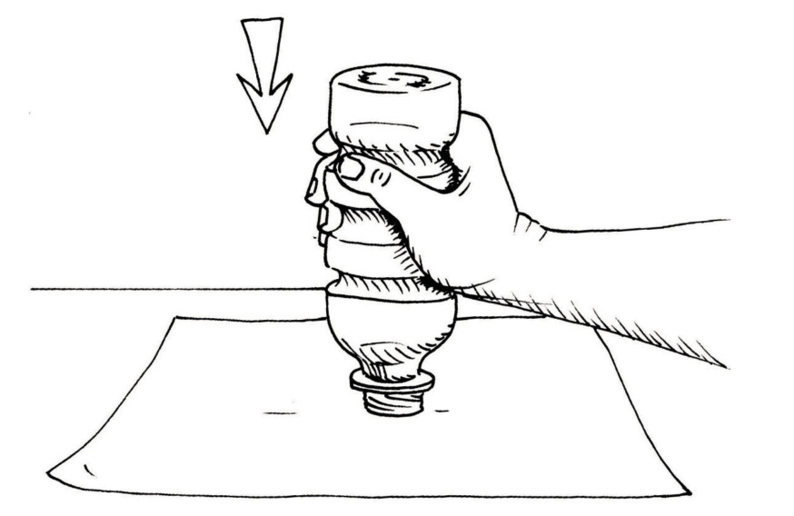Figuur 5
Jy kan ook ’n bottel soos hierdie gebruik om koekies uit platgerolde deeg te druk. Plat plastiek- of metaalvoorwerpe kan op dieselfde manier gemaak word deur hulle uit plastiekvelle of metaalplate te druk. In die geval van metaal moet die afwaartse druk baie groot wees.
1. Tom wil harde staalbuise met skerp rande gebruik om wasters uit ’n ysterplaat te druk. Kan hy ’n soort hefboom gebruik wat hom sal help om genoeg krag uit te oefen om die staalbuise deur die metaalplaat te druk?
Maak ’n skets op die volgende bladsy om te wys hoe dit gedoen kan word. Die masjien wat jy ontwerp, kan ’n wasterpers genoem word.
Figuur 6
|
|
In plaas daarvan om ’n hefboom te gebruik om ’n groot genoeg krag uit te oefen om die waster uit te druk, kan ’n hidrouliese stoottoestel gebruik word.
uitsetsilinder
insetsilinder
Figuur 7
’n Masjien soos hierdie word ’n “hidrouliese pers” genoem.
Die meganiese voordeel wat verkry word deur die gebruik van ’n uitsetsilinder wat dikker is as die insetsilinder word in ’n hidrouliese pers gebruik.
Baie dorpe in Suid-Afrika gebruik vullisvragmotors om sakke afval en ander vullis te versamel.
Figuur 8
Volgelaai neem hierdie vragmotor 15 kubieke meter vullis, dit wil sê ongeveer 120 vullissakke. Die vragmotor beskik oor ’n hidrouliese pers wat die vullis met ’n drukkrag van 15 ton of 15 000 kg kan saamdruk. As jy wil weet hoe groot hierdie krag is, dink aan hoe swaar ’n tweeliter-koeldrankbottel in jou hand voel. Nou dink hoe dit sal voel om 7 500 van hulle in jou hand vas te hou!
Omdat die vragmotor die vullis saampers, kan dit ongeveer 2 000 sakke oplaai voordat dit vol is.
As die uitsetsuier dikker is as die insetsuier, is die uitsetkrag groter as die insetkrag. Die meganiese voordeel is groter as 1.
As die uitsetsuier dunner is as die insetsuier, is die uitsetkrag kleiner as die insetkrag. In hierdie geval is die meganiese voordeel kleiner as 1.
Figuur 9
inset
uitset
Figuur 10 wys dieselfde soort stelsel as figuur 9. Die geel gedeelte is water of ’n ander soort vloeistof. Die rooi en blou dele is silinders wat op en af kan beweeg.
2. (a) Dink aan ’n hidrouliese stelsels soos in figuur 10, wat omtrent 50 cm hoog is.
As die blou silinder 5 cm na onder gedruk word, sal die rooi silinder 5 cm na
bo beweeg, of minder as 5 cm, of meer as 5 cm?
(b) Veronderstel ’n las word bo-op die rooi silinder geplaas, byvoorbeeld ’n kas met appels. Sal die opwaartse krag op die vrag dieselfde wees as die afwaartse krag wat op die blou silinder uitgeoefen word, of sal dit groter of kleiner wees?
Figuur 10
uitvoer
invoer
|
As die uitsetsilinder in ’n eenvoudige hidrouliese stelsel dikker is as die insetsilinder, is die uitsetafstand kleiner as die insetafstand, maar die uitsetkrag groter as die insetkrag. |

6.2 Berekeninge oor hidrouliese stelsels
1. Hieronder word ’n hidrouliese stelsel met reghoekige silinders gewys. Die oppervlakte van die rooi silinder se top is vier maal so groot as die oppervlakte van die blou silinder se top.
 Figuur 11
Figuur 11
2. Die volume van die vloeistof wat aan die regterkant na onder gedruk word, styg aan die linkerkant op en druk die rooi silinder na bo.
3. As die blou silinder met 12 mm na onder beweeg, met hoeveel mm sal die rooisilinder na bo beweeg?
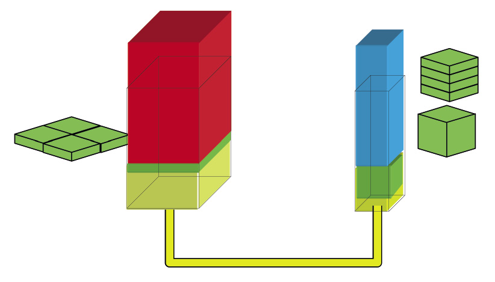Figuur 12
|
Die oppervlakte van die top van die silinder is net so groot soos die oppervlakte van die basis van die silinder, en dis net so groot soos die oppervlakte van enige snit wat mens loodreg op die lengte van die silinder maak. Dit word daarom die deursnitoppervlakte genoem. As jy sukkel om bogenoemde te verstaan, dink aan ’n rol polonie of ’n reghoekvormige brood. Elke stuk wat jy van die polonie of brood afsny, het presies dieselfde vorm en grootte, en daarom ook dieselfde oppervlakte. |
As die blou silinder die groen volume vloeistof aan die regterkant ondertoe druk, sal die rooi silinder deur die groen volume vloeistof aan die linkerkant opwaarts gedruk word.
As die oppervlakte van die basis van die uitsetsilinder vier maal die oppervlakte van die basis van die insetsilinder is, sal die uitsetkrag vier maal so groot as die insetkrag wees. Die uitsetafstand sal ¼ van die insetafstand wees.
In hierdie geval is die meganiese voordeel vier, en die afstandsvoordeel is ¼.
4. In die stelsel wat op die volgende bladsy gewys word, is die oppervlakte van die basis van die uitsetsilinder nege maal die oppervlakte van die basis van die insetsilinder.
(a) Wat is die meganiese voordeel van die stelsel?
(b) Wat is die afstandsvoordeel van die stelsel?

Figuur 13
5. In ’n spesifieke hidrouliese pers beweeg die uitsetsilinder 2 cm ver, as die insetsilinder deur 10 cm beweeg. Hoeveel maal groter is die uitsetkrag as die insetkrag?
6. In ’n spesifieke hidrouliese pers is die deursnitoppervlakte van die uitsetsilinder 40 cm², en die deursnitoppervlakte van die insetsilinder 5 cm².
(a) Hoe ver sal die uitsetsilinder beweeg as die insetsilinder deur 16 cm beweeg word?
(b) Hoe ver moet jy die uitsetsilinder stoot om die uitsetsilinder deur 24 cm te laat beweeg?

6.3 Die hidrouliese motordomkrag
 Figuur 14
Figuur 14
As ’n buiteband pap word, moet die motor opgelig word om die pap wiel af te haal en die noodwiel aan te sit. Omdat die motor te swaar is om met jou kaal hande op te lig, het jy ’n toestel met ’n meganiese voordeel nodig.
Die toestel waarmee motors opgelig word om die wiele om te ruil, word ’n domkrag genoem. ’n Domkrag verskaf ’n meganiese voordeel. Op die volgende bladsy word verskillende soorte domkragte gewys.

Figuur 15: ’n Hidrouliese botteldomkrag
’n Botteldomkrag het ’n hidrouliese stoottoestel aan die binnekant, wat ’n meganiese voordeel gee. As die blou insetsilinder oor ’n spesifieke afstand na onder gedruk word, beweeg die rooi uitsetsilinder met ’n groter krag na bo, maar oor ’n kleiner afstand.
Figuur 16
1. Kyk na figuur 14 op die vorige bladsy. Dink jy die motor sal hoog genoeg opgelig word as die insetsilinder net een keer na onder gedruk word?
Om die motor hoog genoeg op te lig moet die uitsetsilinder ’n hele paar maal hoër gestoot word. Om dit te doen moet die insetsilinder elke keer opwaarts getrek word om vir die volgende afwaartse stoot gereed te wees. Dink aan spuite om te verstaan wat gebeur. Jy kan weer met twee spuite van verskillende groottes eksperimenteer.
 Figuur 17 Figuur 18
Figuur 17 Figuur 18
2. As die blou insetsuier ingedruk word, beweeg die rooi uitsetsuier uit. Wat dink jy sal gebeur as die insetsuier nou weer uitgetrek word?
As die uitsetsilinder kan bly waar dit is na die insetsilinder afwaarts gedruk is, kan die uitsetsilinder hoër gedruk word elke keer as die insetsilinder na onder gedruk word. Ons kan olie by die stelsel voeg om dit moontlik te maak.
’n Regte hidrouliese botteldomkrag het ’n
addisionele bottel met olie, soos in die diagram
wat hieronder gewys word.
Figuur 19
Om die rooi silinder te laat bly waar dit is elke keer as die blou silinder na bo getrek word, moet die olie gekeer word om nie van onder die rooi silinder uitgesuig te word nie. Miskien moet iets soos ’n waterkraan in die wit blokkie in die diagram aan die regterkant geplaas word.

Figuur 20 Figuur 21
’n Balklep soos die een aan die regterkant laat vloeistof toe om in een rigting deur ’n buis te vloei, maar nie in die ander rigting nie. Hierdie balklep bestaan uit ’n bal wat met ’n veer verbind is. Die veer druk die bal teen die opening sodat die vloeistof nie kan deurvloei nie.
As die vloeistof probeer om van die linkerkant na die regterkant te vloei, word die bal van die opening weggestoot en kan die vloeistof deurgaan.
Figuur 22: Balklep toe
Figuur 23: Balklep oop
Die belangrikste deel van ’n hidrouliese motordomkrag is ’n groot uitsetsilinder wat by die bek van die bottelvorm uitsteek. Dit lig die motor op as jy die handvatsel pomp.
Binne die bottel is ’n tenk met olie. Die olie vloei deur die balklep na die plek waar die insetsilinder is. Die balklep laat die vloeistof nie toe om terug te vloei nie.
Die pomphandvatsel is met die klein insetsilinder verbind en druk dit in soos die suier in ’n spuit. Terwyl jy pomp, gaan die insetsilinder op en af en dwing die olie na die uitsetsilinder deur ’n ander balklep.
Elke keer as die insetsilinder afgestoot word, stoot die uitsetsilinder ’n klein afstand na bo, maar met ’n groot krag wat die motor oplig.
As die insetsilinder na onder gedruk word, gaan die rooi klep toe en die blou klep oop. Die olie word dan verby die blou klep gestoot en dit druk die uitsetsilinder opwaarts.
Figuur 24

Wanneer die uitsetsilinder opgetrek word, gaan die rooi klep oop en olie word van die tenk af ingetrek. Die blou klep gaan toe sodat die olie nie van die kant van die uitsetsilinder kan terugvloei nie. As gevolg hiervan beweeg die uitsetsilinder nie terwyl die insetsilinder opgetrek word nie.

Figure 25
Maak op die volgende bladsy ’n stelseldiagram van die werking van ’n motordomkrag. Die prent hieronder kan jou help om te dink aan al die verskillende stappe soos wat mens aanhou om olie te pomp met die insetsilinder. Die stelseldiagram moet die verskillende stappe wys wanneer mens twee keer die insetsilinder afdruk en weer optrek.
Let op dat die addisionele tenk olie in die prent hieronder ’n gat in die middel het waarin die uitsetsilinder pas. Hierdie tenk word ook die oliereservoir van die hidrouliese stelsel genoem.
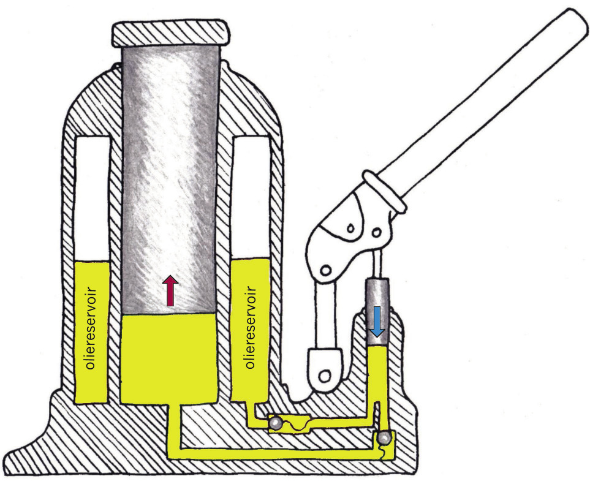
Figuur 26: ’n Tekening van die binnewerking van ’n hidrouliese motordomkrag.
Skets jou stelseldiagram van ’n motordomkrag op hierdie bladsy.
|
|
’n Belangrike vraag
Watter veiligheidsreëls moet mense volg as hulle ’n motordomkrag gebruik?
Evalueer die ontwerp van ’n hidrouliese motordomkrag
1. Wie gebruik hidrouliese motordomkragte?
2. Wat doen ’n mens met ’n hidrouliese motordomkrag?
3. Is ’n hidrouliese motordomkrag ’n goeie stuk gereedskap om ’n motor mee op te lig? Verduidelik.
4. Van watter materiale word hidrouliese motordomkragte gemaak?
5. Wat kos ’n hidrouliese motordomkrag min of meer?
6. Is dit die moeite werd om soveel geld vir ’n hidrouliese motordomkrag te betaal?
7. Is dit nodig dat ’n hidrouliese motordomkrag mooi lyk?
8. Is ’n hidrouliese motordomkrag veilig om te gebruik?

Volgende week
Jy het hierdie week geleer hoe kleppe gebruik kan word om die vloei van olie en die beweging van die uitsetsilinder van ’n motordomkrag te beheer. Volgende week gaan jy leer oor ander maniere om beweging te beheer. Jy gaan ook van katrolle en katrolstelsels leer.
7.1 Rigtingverandering met ’n tou 99
7.2 Verskillende maniere om ’n katrol te gebruik 104
7.3 Meganiese beheerstelsels 107

Figuur 1


Figuur 2: Watter manier om ’n swaar sak op te hys is die maklikste?
7.1 Rigtingverandering met ’n tou
Verskillende maniere om iets op te hys
Die man in figuur 2A op die vorige bladsy wil ’n sak nat sout tot by die tak ophys. Hy wil die sak aan die tak vasmaak sodat dit daar kan hang totdat die wind die sout uitgedroog het. Om die sak bo te kry het hy ’n tou oor die tak gegooi en die een punt van die tou aan die sak vasgemaak.
1. (a) Merk die rigting waarin die man trek met ’n pyltjie op die prent op die
vorige bladsy.
(b) Merk die rigting waarin die sak sal beweeg ook met ’n pyltjie.
2. Dink jy dat die tou vir altyd sal hou as die man dit gebruik om swaar voorwerpe opwaarts en oor die tak te trek?

Figuur 3: Hierdie tou skuur teen die rand van ’n steen.
As jy met dieselfde stuk tou herhaalde kere swaar voorwerpe ophys, sal die tou, soos jy in die foto kan sien, verweer en uiteindelik breek.
As twee oppervlakke teen mekaar vryf, is daar kragte wat op die materiale inwerk en dele van die materiale kan breek. Die kragte wat materiale op mekaar uitoefen wanneer hulle teen mekaar vryf of skuur word “wrywingskragte” genoem. Op ’n koue dag vryf jy soms jou hande teen mekaar om hulle warm te maak. Die warmte is van die wrywingskragte afkomstig.

Figuur 4: ’n Katrol
Om te voorkom dat wrywing ’n tou beskadig wat gebruik word om rigting te verander, kan jy die tou oor ’n wiel, wat ’n katrol genoem word, laat beweeg.

Figuur 5: Die man gebruik ’n katrol om die sak op te hys.
Die stelsel wat die man in figuur 5 gebruik, word ’n enkelwiel-vastekatrolstelsel genoem. Die doel daarvan is om die rigting van die trekkrag te verander, maar dit gee nie ’n meganiese voordeel nie.
Die man kan nie deur net een keer te trek die sak van die grond af tot by die tak ophys nie. Hy moet ’n plan maak sodat die sak nie na onder val terwyl hy sy greep verander om vir nog ’n trek gereed te maak nie.
Die diagram hier regs wys ’n toestel wat ’n “nokklamp” genoem word. As die tou opwaarts getrek word, sal die nokke nader aan die tou beweeg, dit vasknyp, en verhoed dat dit kan deurgly.
As die tou afwaarts getrek word, sal die
nokke uitmekaar gedruk word en kan die tou ongehinderd deurbeweeg.
Soos hieronder gewys word, kan jy met ’n potlood tussen jou duim en wysvinger eksperimenteer om ’n gevoel te kry van hoe ’n nokklamp werk.
Toestelle soos ’n nokklamp, of die kleppe waarvan julle in hoofstuk 6 geleer het, laat sekere bewegings toe, maar voorkom weer ander bewegings. Sulke toestelle word “beheertoestelle” genoem.

Figuur 6: ’n Nokklamp
 Figuur 7: Jy kan ’n potlood tussen jou duim en wysvinger laat deurgly om te voel hoe ’n nokklep werk.
Figuur 7: Jy kan ’n potlood tussen jou duim en wysvinger laat deurgly om te voel hoe ’n nokklep werk.
3. Maak ’n ruwe skets in die spasie hieronder om te wys waar die man in figuur 5 ’n nokklamp kan plaas om dit vir hom makliker te maak om die sak tot by die tak op te trek.
|
|

’n Belangrike eksperiment
Vir die praktiese aktiwiteit wat jy nou gaan doen, het jy het ’n stukkie tou of ’n skoenveter, en ’n koppie of beker met ’n handvatsel nodig.
Plaas die koppie bo-op jou skoolbank. Steek die tou deur die handvastel. Hou een punt van die tou met jou linkerhand in die lug. Trek die ander punt van die tou opwaarts met jou regterhand om die koppie op te lig. Hou jou linkerhand stil! Laat die tou of skoenriem deur die handvatsel gly.
 Figuur 8
Figuur 8
Word die koppie met dieselfde afstand opgelig as die afstand waarmee jy jou regterhand oplig? Herhaal die eksperiment en kyk goed na die bewegings, sodat jy die afstande duidelik sien. Probeer om jou waarneming te verduidelik.
7.2 Verskillende maniere om ’n katrol te gebruik
Die stelsel hier regs word ’n “katrolstelsel” genoem.
Kyk sorgvuldig na die diagram op die teenoorstaande bladsy, wat verskillende maniere wys waarop katrolle gebruik kan word as voorwerpe met ’n tou opgehys word.
In die diagramme is die rooi katrolle aan die ondersteuningstruktuur vasgemaak. Hulle kan draai, maar hulle kan nie beweeg nie. Die rooi katrolle word vaste katrolle genoem. Die blou katrolle kan beweeg en hulle word beweegbare katrolle genoem.
Figuur 10A wys ’n enkelwiel-vastekatrolstelsel.
Figuur 10B wys ’n enkelwiel- beweegbare katrolstelsel.
Figuur 10C wys ’n katrolstel of takelstel
(Engels: block and tackle).

Figuur 9: ’n Blok en takel
1. Kyk goed na figure 10A en 10C.
(a) As die tou 10 cm na onder getrek word in figuur 10A, sal die las (die swart voorwerp) ook 10 cm opwaarts beweeg?
(b) As die tou 50 cm na bo getrek word in figuur 10B, sal die las (die swart voorwerp) ook 50 cm opwaarts beweeg?
(c) Wanneer sal jy meer werk verrig, as jy die tou 50 cm na onder trek in figuur 10A, of as jy die tou 50 cm na onder trek in figuur 10C?


Figuur 10A Figuur 10B Figuur 10C
In katrolstelsels soos hierdie is die doel van die vaste katrolle, wat hier in rooi gewys word, om die rigting van die tou te verander, sodat ’n mens na onder kan trek om ’n voorwerp op te hys.
2. Op watter wyse help die beweegbare katrolle, wat in blou gewys word, om dit makliker te maak om die swart voorwerp op te hys? As jy dit moeilik vind om hierdie vraag te beantwoord, onthou wat jy ondervind het toe jy die eksperiment met die toutjie en die koppie op bladsy 103 van hierdie hoofstuk gedoen het.
Die prent hieronder kan jou help om beter te verstaan hoe ’n beweegbare katrolstelsel werk.

50 cm tou
50 cm tou
Figuur 11: Enkelwiel beweegbare katrolstelsel
Veronderstel die vrag is 50 cm onder die balk. Om die vrag tot by die vlak van die balk te hys, moet jou hand die tou 100 cm na bo trek. Jou hand beweeg dus 100 cm na bo terwyl die vrag slegs 50 cm na bo beweeg.
Omdat jou hand twee keer die afstand van die vrag beweeg, is die trekkrag wat jou hand moet uitoefen net die helfde van wat nodig sou wees om die vrag direk op te lig. Dit wil sê jy hoef slegs met ’n krag van 5 kg na bo te trek om die 10 kg vrag op te lig. Jy verkry dus ’n meganiese voordeel, maar ’n afstandsnadeel.

7.3 Meganiese beheerstelsels
’n Fiets kan nogal vinnig ry.
 Figuur 12
Figuur 12
Om egter veilig te wees as jy met ’n fiets ry, moet jy in staat wees om die spoed te beheer. Jy het remme nodig. Een soort fietsrem word op die foto hier regs gewys. Die diagramme op die volgende bladsy sal jou help om hierdie foto beter te verstaan.
Dink aan ’n skêr:

Figuur 14
’n Skêr kan ook só gemaak word:

Figuur 15: ’n Instrument soos dié word soms ’n “meetpasser” genoem
Die handvatsels kan só gebuig word:
 Figuur 16
Figuur 16
Die remstelsel in figuur 13 op bladsy 107 werk soos ’n meetpasser. So ’n remstelsel word ’n “passerrem” genoem (Engels: calliper brake).
 Figuur 17: ’n Passerrem vir ’n fiets
Figuur 17: ’n Passerrem vir ’n fiets
1. Doen nou die volgende:
(a) Teken op die prent hierbo die deel van die fietswiel wat tussen die remblokkies pas. Dit is die vooraansig.
(b) Teken op die volgende bladsy ’n sy-aansig van die passerrem (let daarop dat die remblokkies anders lyk in ’n sy-aansig en dat daar weggesteekte lyne is).
Kleur die twee arms met verskillende kleure in.
Voeg byskrifte by om die remblokkies en die steunpunt aan te toon.
Gebruik pyltjies om te wys hoe die onderdele beweeg as daar rem aangeslaan word.
Maak jou tekening van ’n fiets se passerrem hier:
|
|

Baie motors, motorfietse, bergfietse, en selfs treine en vliegtuie se wiele, gebruik “skyfremme” wat met ‘n hidrouliese meganisme werk. Die hidrouliese meganisme gebruik ’n uitsetsuier om ’n skyf wat aan die wiel vas is, vas te knyp.


Figuur 18: ’n Motor se skyfrem Figuur 19: ’n Motorfiets se skyfrem

wiel hier aangeheg
remskoen
remskyf
meetpasser
uitsetsuier
olie
Figuur 20: Die onderdele van ’n motorskyfrem
’n Skyfremstelsel bestaan uit ’n remskyf, ’n “passer”, remskoene en hidrouliese inset-en uitsetsilinders.
Die gedeelte van ’n skyfremstelsel wat die remskoene en die hidrouliese uitsetsuier vashou, word ook ’n “passer” (Engels: calliper) genoem, alhoewel dit baie min in gemeen met ’n passerrem het, behalwe vir die U-vorm daarvan. ’n Passerrem bestaan uit twee arms wat elkeen beweeg om dieselfde steunpunt. Maar die “passer” in ‘n skyfremstelsel is een soliede stuk wat nie beweeg nie. Dit dien as die stewige vasmaakplek vir al die bewegende dele van die skyfremstelsel.
As die rempedaal ingetrap word, beweeg dit die insetsuier wat dan olie in die uitsetsuier instoot.
Die uitsetsuier druk dan die remskoene teen die oppervlak van die remskyf. Hierdie kontak veroorsaak wrywing, wat die voertuig dwing om stadiger te beweeg of selfs tot stilstand te kom.
Eenrigtingbeheerstelsels
’n Remstelsel voorkom beweging in beide rigtings. Maar “eenrigtingkleppe”, soos wat in ’n hidrouliese motordomkrag gebruik word, verhoed slegs vloei (beweging van ’n vloeistof) in een rigting, maar laat vloei in die teenoorgestelde rigting toe. ’n “Nokklamp” is soos ’n eenrigtingklep, dit laat beweging in een rigting toe, maar nie in die teenoorgestelde rigting nie.
Figuur 21

Die toestel hieronder word ’n sperrat-en-ratpal stelsel genoem. Die wiel met die tande is die sperrat, en die ander voorwerp die ratpal.

Figuur 22: ’n Sperrat en klink
1. Maak ’n vryhandskets op die onderste deel van die volgende bladsy om te wys hoe ’n eenrigtingbeheerstelsel saam met ’n blok en takel gebruik kan word om swaar vragte op te lig.
 Figuur 23: Die man wil die sak tot bo by die tak ophys.
Figuur 23: Die man wil die sak tot bo by die tak ophys.
Teken ’n blok en takel met ’n eenrigtingbeheerstelsel in die spasie hieronder:
|
|

|
’n Vraag om jou te laat dink |
Hoekom is dit vir die meisie makliker om oor die muur te gaan as vir die seun? Probeer om te verduidelik waarom hierdie situasie soortgelyk is aan hefbome, hidrouliese stelsels en beweegbare katrolstelsels.

Figuur 24
 Figuur 25
Figuur 25
Volgende week
Volgende week leer jy meer oor verskillende ratte en ratstelsels.
In hierdie hoofstuk hersien jy reguittandrat stelsels en hoe hulle gebruik kan word om die rigting, spoed en draaikrag van rotasie te verander. Jy gaan die aantal omwentelinge, rotasiespoed en draaikragte bereken.
Jy gaan ook ander soorte ratstelsels ondersoek, naamlik keëlratte, kleinrat-en-tandstang stelsels, en wurmrat stelsels. Hierdie ander soorte ratstelsels maak dit moontlik om die rigting van rotasie te verander op maniere wat reguittandratte nie kan doen nie.
8.1 Rigting van rotasie van reguittandratte 117
8.2 Ratverhouding, rotasiespoed en draaikrag 121
8.3 Ander soorte ratte 126
_opt.jpeg)
Figuur 1
Figuur 2
8.1 Rigting van rotasie van reguittandratte
Kontrarotasie en tussenratte
1. (a) Hoeveel tande het elkeen van hierdie
ratte?
(b) Die swart rat word kloksgewys gedraai totdat die geel kol die posisie wat in figuur 4 gewys word, bereik. Trek pyltjies langs figuur 4 om te wys waar die blou en rooi kolle sal wees.

Figuur 3
(c) In watter rigting het die blou rat gedraai?

Figuur 4
(d) Deur watter deel van ’n volle
omwenteling het elke rat gedraai?
|
Die blou en swart ratte in die situasie hierbo draai in teenoorgestelde rigtings. Dit kan ook beskryf word deur te sê dat die twee ratte teenroteer. |
2. Die donkerblou rat aan die linkerkant hieronder word antikloksgewys deur twee derdes van ’n volle omwenteling gedraai. Wys met behulp van pyltjies waar elk van die geel kolle daarna sal wees.
 Figuur 5
Figuur 5
3. As die rooi rat hieronder antikloksgewys gedraai word, in watter rigting sal die grys rat draai?

Figuur 6: Teenrotasie
4. In die situasie hieronder, dryf die rooi rat die blou rat aan, en die blou rat dryf op sy beurt die grys rat aan. Indien die rooi rat kloksgewys gedraai word, in watter rigting sal die grys rat draai?
 Figuur 7: ’n Blou tussenrat
Figuur 7: ’n Blou tussenrat
5. Indien die rooi rat in die stelsel hierbo ’n volle omwenteling maak, hoeveel omwentelings sal die blou rat maak, en hoeveel omwentelings sal die grys rat maak?
Aantal rotasies van dryfratte en gedrewe ratte
Veronderstel die rooi rat in figuur 8 dryf die klein, grys rat aan. Die rooi rat het 18 tande en die grys rat het 6 tande. Vir elke 1 rat in die grys rat, is daar 3 tande in die rooi rat.
Figure 8
|
Wanneer ’n rat een volle omwenteling maak, kan ons ook sê dat dit een volle revolusie maak. |
1. Indien die rooi dryfrat een volle omwenteling antikloksgewys maak, hoeveel omwentelinge sal die grys gedrewe rat maak, en in watter rigting?
2. Indien die rooi dryfrat een volle omwenteling antikloksgewys maak, hoeveel omwentelinge sal die grys gedrewe rat maak, en in watter rigting?
3. Hoeveel omwentelinge moet die rooi rat maak vir die grys rat om 12 omwentelinge te maak?
4. In ’n ander ratstelsel het die dryfrat 20 tande en die gedrewe rat 80 tande. Hoeveel volle omwentelinge sal die gedrewe rat maak indien die dryfrat 20 volle omwentelinge maak?

Rotasiespoed van dryfratte en gedrewe ratte
Veronderstel die klein rat in figuur 9 dryf die groot rat aan. Die klein rat het 20 tande en die groot rat het 40 tande.
1. Indien die klein dryfrat 12 omwentelinge in een minuut maak, hoeveel omwentelinge sal die gedrewe rat in dieselfde tyd maak?
Figuur 9
2. Indien die klein dryfrat in figuur 9, 40 revolusies in een minuut maak, hoeveel omwentelinge sal die gedrewe rat in dieselfde tyd maak?
|
Indien ’n rat 40 revolusies in een minuut voltooi, sê ons dat die rat teen ’n spoed van 40 revolusies per minuut draai. Die afkorting r.p.m. word dikwels gebruik vir “revolusies per minuut”. |
3. Dink weer aan die situasie in figuur 9. Indien die dryfrat met 20 tande teen 80 r.p.m. draai, teen watter spoed sal die gedrewe rat met 40 tande draai?
4. Indien jy die gedrewe rat in figuur 9 teen ’n spoed van 120 r.p.m. wil laat draai, hoe vinnig sal die dryfrat gedraai moet word?

8.2 Ratverhouding, rotasiespoed en draaikrag
Figuur 10: ‘n Padroller Figuur 11: ‘n Sportmotor
’n Padroller het ’n groter enjin as ’n sportmotor, maar beweeg baie stadiger.
Hoekom? Om ’n swaar padroller te laat beweeg, moet ’n groot draaikrag toegepas word op die wiele. Indien die uitset rotasiespoed van die wiele baie stadiger is as die inset rotasiespoed van die enjin, dan sal die uitset rotasiekrag baie groter wees as die inset rotasiekrag. ’n Padroller gebruik ’n stel ratte wat die vinnige rotasiespoed van die enjin verander in ’n baie stadige rotasiespoed van die wiele, sodat die draaikrag by die wiele sterk genoeg is om die swaar padroller te laat beweeg.
By ’n sportmotor is daar ’n baie kleiner rotasiekrag by die wiele nodig, omdat die motor lig is. Die stel ratte wat mens gebruik om ’n sportmotor te laat wegtrek, verander ook die vinnige rotasiespoed van die enjin in ’n stadiger rotasiespoed van die wiele, maar nie so stadig soos met die padroller nie. Dus die sportmotor se wiele draai vinniger, maar met ’n kleiner draaikrag.
1. Kyk na die stel ratte in figuur 12. Die dryfrat het 20 tande en die gedrewe rat het 80 tande.
Word die rotasie krag deur hierdie ratstelsel vermeerder of verminder? Verduidelik jou antwoord.

Figuur 12
Hersiening van wat jy in graad 8 omtrent ratte geleer het
Kyk na die stel ratte hier regs. Die groot rat is die insetrat en die klein rat is die uitsetrat.
Elke rat is vas aan ’n as, en die as draai die waaier. Die spoed waarteen die waaier draai word die rotasiespoed van die as genoem.
Wanneer ’n rat met baie tande ’n rat met minder tande aandryf, draai die gedrewe rat vinniger, maar met ’n kleiner draaikrag as die dryfrat.
Wanneer ’n rat met min tande ’n rat met baie tande aandryf, draai die gedrewe rat stadiger, maar met ’n groter draaikrag as die dryfrat.

Figuur 13
Ratverhouding word as volg gedefinieer:
ratverhouding =
rotasiespoed van insetas
rotasiespoed van uitsetas
=
draaikrag op uitsetas
draaikrag op insetas
=
aantal tande op uitsetrat
aantal tande op insetrat
1. Bereken die ratverhouding van die ratstelsel in figuur 12.
Ratverhouding en “spoedverhouding” is dieselfde ding.
Jy kan ratverhouding op verskeie maniere skryf, byvoorbeeld “2 tot 1”, “2:1” of eenvoudig “2”.
Draaikrag word ook wringkrag genoem.
2. In figuur 12, indien die insetas teen 120 r.p.m. roteer, teen watter spoed roteer die uitsetas?
3. In figuur 12, watter as sal met die grootste krag draai, die dryfas of die gedrewe as?

Vergelyk draaikrag op die inset- en uitsetasse
In hoofstuk 7 het jy geleer hoe ’n stelsel van hefbome jou ’n meganiese voordeel kan gee om dit makliker te maak om swaar voorwerpe op te hys. Jy gaan nou ondersoek hoe ’n ratstelsel dieselfde kan doen deur ’n klein draaikrag op die insetas te verander na ’n groot draaikrag op die uitsetas.
Kyk na figuur 14 hieronder. Die insetrat (dryfrat) het 9 tande en die uitsetrat (gedrewe rat) het 18 tande. ’n Tou is om elkeen van die asse gedraai.
Neem Kennis: In hierdie hoofstuk sal jy slegs met asse wat dieselfde diameter het, werk. Wanneer die diameter van die asse, waarom die tou gebind is, verskil, sal jy dit ook in ag moet neem om draaikrag te vergelyk.
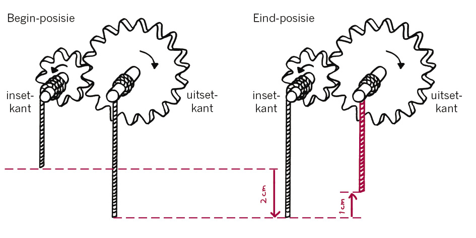
Figuur 14
1. Wat is die ratverhouding?
2. Vir een volle omwenteling van die insetrat, hoeveel omwentelinge sal die uitsetrat maak?
3. Indien jy die inset tou met 2 cm aftrek, hoe ver sal die uitset tou opgetrek word? Teken die uitset tou in die “posisie aan die einde” deel van figuur 14 om aan te dui waar die uitset tou sal wees nadat jy die inset tou met 2 cm afgetrek het.
4. Is die krag wat deur die uitset tou uitgeoefen word groter of kleiner as die krag wat op die inset tou uitgeoefen word? Hoeveel groter of kleiner is die krag?
Wenk: Dink aan die situasie asof dit ’n hefboomstelsel is. Jy weet reeds wat die verhouding tussen die insetafstand en die uitsetafstand is.
5. Indien jy met ’n krag gelyk aan 3 kg by die insetkant aftrek, hoe swaar las sal by die uitsetkant opgehys kan word? Skryf dit hieronder en op figuur 15 neer.
Figuur 15

Die 3 kg inset gewig in figuur 15 stel die draaikrag voor wat op die insetas uitgeoefen word. Die uitset gewig stel die draaikrag voor wat deur die uitsetas uitgeoefen word. Jy gaan nou jou antwoord vir vraag 5 toets deur die formules vir ratverhouding te gebruik:
ratverhouding =
rotasiespoed van insetas
rotasiespoed van uitsetas
=
draaikrag op uitsetas
draaikrag op insetas
=
aantal tande op uitsetrat
aantal tande op insetrat
Jy het reeds die aantal tande op die inset- en uitsetratte gebruik om die ratverhouding te bereken as 2:1. Dit kan eenvoudig as 2 geskryf word.
Indien jy die blou gedeelte van die formules herrangskik, kan jy die draaikrag op die uitsetas die onderwerp van jou formule maak:
(draaikrag op uitsetas) = (ratverhouding) × (draaikrag op insetas)
6. Gebruik die formule hierbo om jou antwoord op vraag 5 te toets.
7. Die vrae hieronder handel oor ander ratstelsels met toue om die asse, soortgelyk aan die stelsel op die vorige bladsy:
(a) In ’n sekere stelsel het die insetas 6 tande en die uitsetas 18 tande. Indien jy ’n trekkrag van 4 kg op die inset tou uitoefen, wat sal die swaarste las wees wat deur die uitset tou opgehys kan word?
(b) In ’n sekere stelsel het die insetas 12 tande en die uitsetas 30 tande. Indien jy ’n las van 75 kg met die uitset tou wil ophys, met watter krag, in kilogram, moet jy aan die inset tou trek?
(c) ’n Sekere persoon kan slegs met ’n maksimum krag van 25 kg trek. Daardie persoon moet laste van tot 150 kg ophys. Ontwerp ’n ratstelsel wat die persoon in staat sal stel om sulke swaar laste op te hys. Met ander woorde, hoeveel tande moet die inset- en uitsetratte hê?

8.3 Ander tipes ratte
Keëlratte

Figuur 16: Twee reguittandratte met asse Figuur 17: Twee keëlratte met asse loodreg
parallel aan mekaar met betrekking tot mekaar
Die asse van die twee reguittandratte in figuur 16 is parallel aan mekaar, maar die asse van die keëlratte in figuur 17 vorm ’n 90° hoek met mekaar. Die ratte in figuur 17 is ook anders gevorm as gewone reguittandratte, om hulle beter teen regte hoeke met mekaar te laat werk. Hulle word keëlratte genoem.
Keëlratte word gebruik om die rigting van die rotasie in toestelle soos handbore en voedselmengers te verander.

Figuur 18: ’n Handboor Figuur 19: ’n Voedselmenger
1. Dink jy dat keëlratte ook gebruik kan word om rotasiespoed te verander? Verduidelik jou antwoord en gee voorbeelde.
2. Hoekom is vinnige rotasie nodig om eiers behoorlik te klits?
3. In ’n spesifieke keëlratstelsel is die ratverhouding 1 tot 12.
(a) Die gedrewe rat het 8 tande. Hoeveel tande het die dryfrat?
(b) Hoeveel omwentelinge sal die dryfrat maak indien die gedrewe rat 60 omwentelinge maak?
(c) Hoe vinnig moet die dryfrat draai om die gedrewe rat teen 36 r.p.m. te laat draai?
4. Veronderstel jy wil ’n voedselmenger koop om jou te help om bestanddele te meng wanneer jy koek bak. Watter voedselmenger sal die grootste krag benodig om die bestandele te meng: die menger met ’n ratverhouding van 1:3 of die menger met ’n ratverhouding van 1:30? Verduidelik jou antwoord.
Tandstang ratstelsels
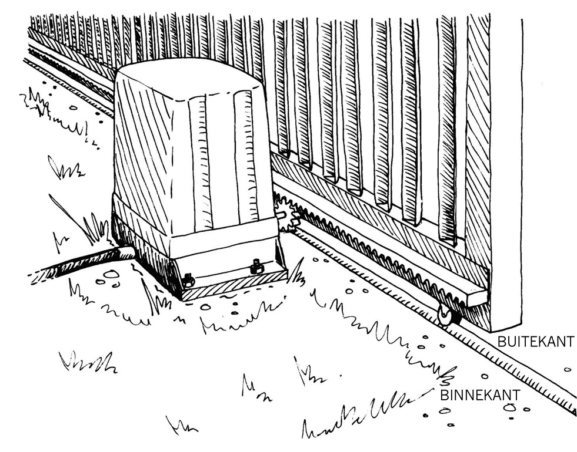Figuur 20: ’n Tandstang en kleinrat in ’n sekuriteitshek
In figuur 20 is daar ’n dopstruktuur wat aan die grond vasgebout is.
1. Wat dink jy is binne die doptruktuur in figuur 20, en waarom is dit daar?
2. In watter rigting sal die hek beweeg wanneer die klein reguittandrat kloksgewys gedraai word (soos vanaf die binnekant van die hek gesien?
Die klein reguittandrat word ’n kleinrat genoem.
Die reguit staaf met tande word ’n tandstang genoem.
|
As iets in die rondte draai, soos ’n wiel, word dit “sirkelbeweging” of “rotasie” genoem. As iets in ’n reguit lyn beweeg, soos ’n vallende klip, word dit “liniêre beweging” genoem. |
Figuur 21


Die klein reguittandrat word die kleinrat genoem.
Die reguit staaf met tande word die tandstang genoem.
Figuur 22: ’n Kleinrat-en-tandstang stelsel
3. Watter onderdeel van die kleinrat-en-tandstang stelsel roteer?
4. Watter onderdeel van die kleinrat-en-tandstang stelsel beweeg in ’n reguit lyn?
5. As die afstand tussen twee naasliggende tande op die tandstang 3 cm is, en die kleinrat 18 tande het, hoe ver sal die tandstang beweeg as die kleinrat een volle omwenteling voltooi?

Figuur 23
Party motors het ’n stuurstelsel wat met ’n kleinrat-en-tandstang stelsel werk.
In figuur 24 kan jy sien dat die stuurwiel aan die kleinrat gekoppel is. As jy die stuurwiel draai, roteer die kleinrat saam en beweeg die tandstang heen en weer, amper soos ’n elektriese sekuriteitshek.
 Figuur 24: ’n Kleinrat-en-tandstang stuurstelsel vir ’n motor
Figuur 24: ’n Kleinrat-en-tandstang stuurstelsel vir ’n motor
Die tandstang is met die voorwiele verbind en draai hulle van die een kant na die ander wanneer jy die stuurwiel draai.
6. (a) Hoeveel tande het die kleinrat van die stuurstelsel in figuur 24?
(b) Watter verskil sal dit vir die motor se bestuurder maak as die kleinrat van die stuurstelsel vervang word met ’n groter een wat 27 tande het?

Wurmratte
 Figuur 25: ’n Wurmratstelsel
Figuur 25: ’n Wurmratstelsel
As die wurm draai, druk dit die wiel stadig om en om.
In figuur 26 hieronder kan jy sien dat die wurm dryfrat drie tande van die wiel raak. Slegs die rooi tand 26 word werklik deur die wurm aangestoot terwyl hy draai.

Figuur 26
Wurmratte word normaalweg ontwerp sodat die wurm tydens elke omwenteling wat dit voltooi teen ’n ander tand stoot. Daarom sal die rooi tand, na vyf omwentelinge van die wurm, by die blou kol in figuur 26 wees, en die geel kol sal wees waar die rooi tand aan die begin was.
1. As die wiel in figuur 26, 32 tande het, hoeveel omwentelinge moet die wurm maak vir die wiel om een volle omwenteling te voltooi?
2. Draai die wiel vinniger of stadiger as die wurm?
3. As daar 18 tande aan die wiel is, en die wurm word teen 6 r.p.m. gedraai, hoe lank sal dit die wiel neem om een volle omwenteling te voltooi?
4. As die wiel 18 tande het, hoe vinnig moet die wurm gedraai word om die wiel teen 3 r.p.m. te laat draai?
Die rede waarom wurmratte gebruik word, is om ’n groot vermindering van uitsetspoed te kry, wat ’n groot toename in uitsetkrag beteken.
Soos met reguittandrat-stelsels, hoe stadiger die uitsetrat draai, hoe meer draaikrag oefen dit uit. As die wurm vinnig draai, draai die wurmwiel stadig, maar met ’n baie groter draaikrag. Dit is daarom dat wurmratstelsels gebruik word om swaar voorwerpe op te lig.

Figuur 27: ’n Wurm en wurmwiel wat baie jare gelede gebruik is om swaar vragte op te hys.

|
Probeer iets verduidelik en ontwerp ’n dromkrag |
Daar is nog ’n nuttige eienskap van wurmratstelsels: die wurm kan die wiel laat draai, maar die wurmwiel kan nie die wurm laat draai nie. Dit is nog ’n rede hoekom wurmratstelsels vir hystoestelle gebruik word.
Verbeel jou jy is in ’n hysbak wat deur ’n gewone reguittandratstelsel opgelig word en daar kom ’n kragonderbreking.
Verduidelik wat sal gebeur en hoekom.
In hoofstuk 6 het jy oor hidrouliese motordomkragte geleer. Daar is ook ander tipes motordomkragte. Gebruik die spasie hieronder om ’n ruwe skets te maak van hoe ’n kleinrat-en-tandstang in kombinasie met ’n sperrat-en-ratpal gebruik kan word om ’n motordomkrag te maak.
Volgende week
Volgende week gaan jy kyk na verskillende toetstelle wat mense dikwels gebruik, en jy gaan hulle evalueer. Jy gaan ook ’n artistiese tekening maak van die binnekant van jou klaskamer.
Hierdie week gaan jy items wat verskillende meganismes gebruik, en tuis gebruik word, evalueer. Jy gaan oor drie van hierdie items ’n verslag skryf. Jy gaan ook ’n artistiese tekening maak van jou klaskamer, soos van binne gesien.
9.1 Gereedskap tuis 138
9.2 Perspektieftekening met een verdwynpunt 145
9.3 Teken jou klaskamer 147
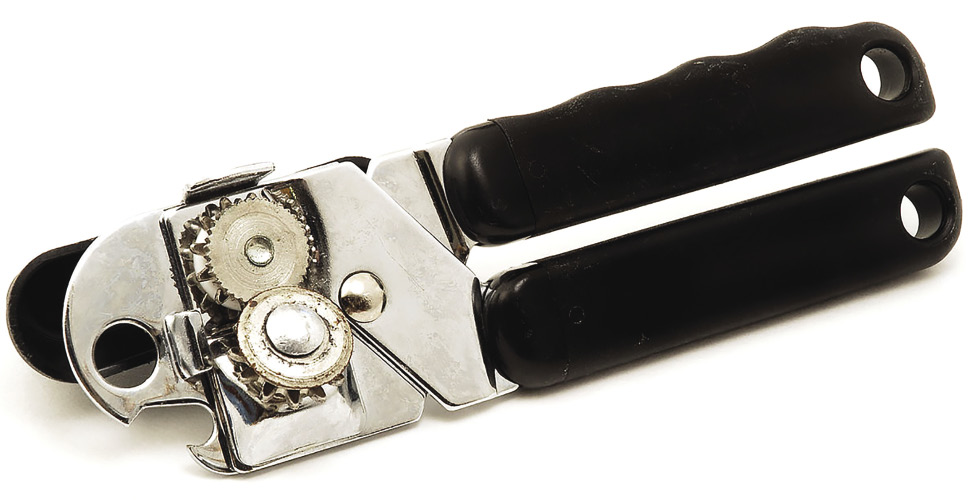
Figuur 1: ’n Blikoopmaker
 Figuur 2
Figuur 2
9.1 Gereedskap tuis
Tot dusver het jy geleer van hefbome, motordomkragte, katrolle en ratte. Hulle maak die lewe vir ons makliker, want hulle geen aan ons ’n meganiese voordeel. Hulle maak dinge vir ons makliker, want hulle gee vir ons addisionele krag, ’n sterker greep en meer hyskrag.
Dit is egter nie net groot masjiene wat voordeel trek uit hierdie meganiese voordeel nie. Tuis het ons heelwat gereedskapstukke wat ook aan ons ’n meganiese voordeel gee. Jy tref hulle in die kombuis, die tuin en in die motorhuis aan.
Maar dis nie altyd ooglopend dat party soorte tuisgereedskap vir ons ’n meganiese voordeel gee nie. Hier volg ’n paar voorbeelde om vir jou te wys hoe ’n meganiese voordeel soms versteek kan word.
’n Broodmes is ’n hefboom. Dit werk goed om deur die brood te sny omdat dit ’n lang handvatsel het.
’n Tuingraaf is ook ’n hefboom wat help om die grond te breek. Jy verskaf die krag (poging) met jou hande en jou voet is die steunpunt. As jy soms die steel met een hand vashou en jou ander hand op die handvatsel het, is die hand op die steel die steunpunt.
’n Moersleutel is ’n hefboom wat presies oor die moer pas sodat die moer maklik vas- en losgedraai kan word.
’n Eierklitser gebruik keëlratte om die rigting van die beweging te verander. Die lemme draai vinniger as wat die handvatsel gedraai word. Die handvatsel is vas aan die dryfrat met sy baie tande, veronderstel hy het 36 tande. Die volgratte het minder tande as die dryfrat, veronderstel hulle het elkeen 12 tande.Vir elke draai van die dryfrat sal die volgratte drie maal in die rondte draai. ’n Eierklitser gee dus nie ’n meganiese voordeel nie, maar dit gee ’n voordeel in rotasiespoed.
Windpompe of windturbines draai in die rondte omdat die lemme hefbome is. Die wind druk teen die lem en tree as krag op. Windpompe gebruik ook ratte om pompe aan te dryf.
’n Blikoopmaker gebruik ratte en hefbome wat dit maklik maak om deur die deksel van ’n blik te sny.
 Figuur 3: ’n Blikoopmaker
Figuur 3: ’n Blikoopmaker
 Figuur 4: ’n Broodmes
Figuur 4: ’n Broodmes
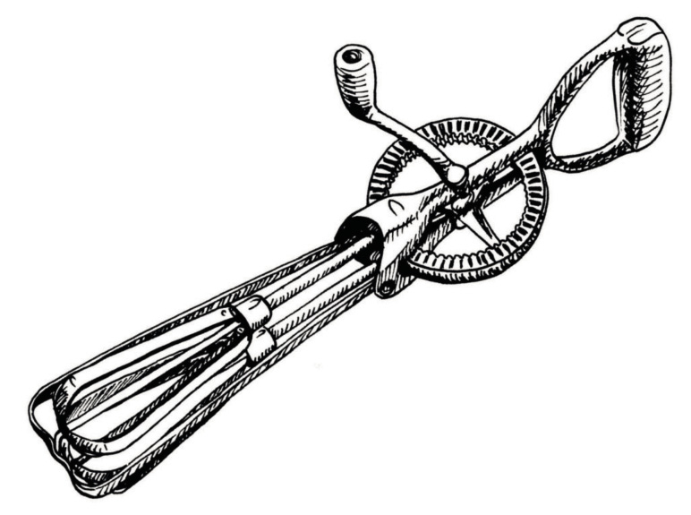Figuur 5: ’n Handklitser

Figuur 6: ’n Moersleutel
1. Kies enige drie van die stukke gereedskap wat hier gelys word en evalueer hulle op die volgende bladsye:
|
|
2. Beskryf drie stukke gereedskap wat jy weet mense soms in en om die huis gebruik en wat nie op die lys hierbo is nie.
|
Naam van gereedskapstuk |
|
|
Wie sal dit gebruik?
|
|
|
Wat kan jy met die gereedskapstuk doen; wat is die doel daarvan?
|
|
|
Hoe gee dit jou ’n meganiese voordeel?
|
|
|
Van watter materiaal of materiale is dit gemaak?
|
|
|
Waarom is dit van hierdie materiaal gemaak?
|
|
|
Watter ander soorte materiaal kan gebruik word om hierdie gereedskapstuk mee te maak?
|
|
|
Hoeveel dink jy behoort ’n mens daarvoor te betaal? |
|
|
Wat kan verkeerd gaan terwyl dit gebruik word? Hoe kan dit jou skade aandoen?
|
|
|
Watter veiligheidsmaatreëls behoort jy na te kom wanneer jy hierdie gereedskapstuk gebruik?
|
|
|
Naam van gereedskapstuk |
|
|
Wie sal dit gebruik?
|
|
|
Wat kan jy met die gereedskapstuk doen; wat is die doel daarvan?
|
|
|
Hoe gee dit jou ’n meganiese voordeel?
|
|
|
Van watter materiaal of materiale is dit gemaak?
|
|
|
Waarom is dit van hierdie materiaal gemaak?
|
|
|
Watter ander soorte materiaal kan gebruik word om hierdie gereedskapstuk mee te maak?
|
|
|
Hoeveel dink jy behoort ’n mens daarvoor te betaal? |
|
|
Wat kan verkeerd gaan terwyl dit gebruik word? Hoe kan dit jou skade aandoen?
|
|
|
Watter veiligheidsmaatreëls behoort jy na te kom wanneer jy hierdie gereedskapstuk gebruik?
|
|
|
Naam van gereedskapstuk |
|
|
Wie sal dit gebruik?
|
|
|
Wat kan jy met die gereedskapstuk doen; wat is die doel daarvan?
|
|
|
Hoe gee dit jou ’n meganiese voordeel?
|
|
|
Van watter materiaal of materiale is dit gemaak?
|
|
|
Waarom is dit van hierdie materiaal gemaak?
|
|
|
Watter ander soorte materiaal kan gebruik word om hierdie gereedskapstuk mee te maak?
|
|
|
Hoeveel dink jy behoort ’n mens daarvoor te betaal? |
|
|
Wat kan verkeerd gaan terwyl dit gebruik word? Hoe kan dit jou skade aandoen?
|
|
|
Watter veiligheidsmaatreëls behoort jy na te kom wanneer jy hierdie gereedskapstuk gebruik?
|
|
9.2 Perspektieftekening met een verdwynpunt
Verbeel jou jy ry in ’n motor of taxi met ’n lang, reguit pad langs. As jy reguit na voor in die rigting van die horison kyk, lyk dit of die kante van die pad mekaar iewers ver voor ontmoet, soos op hierdie prent uitgebeeld.
Hierdie punt word die verdwynpunt genoem. Alhoewel die pad in die werklike lewe nie nouer word nie, lyk dit of die reguit lyne nader aan mekaar beweeg en by die horison ontmoet, en die pad dan verdwyn.
Die horison is die lyn waar dit lyk asof die aarde se oppervlak en die lug ontmoet.
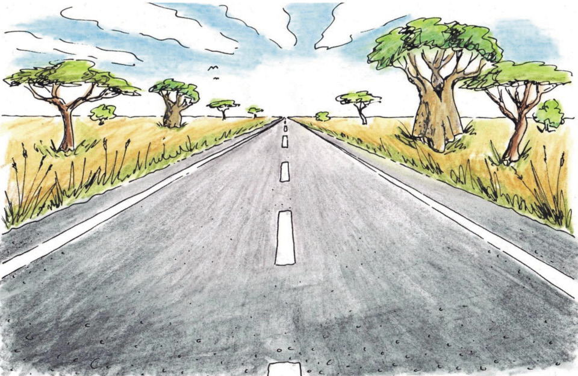Figuur 7: Verdwynpunt by die horison
Om voorwerpe met ’n enkele verdwynpunt te teken is een manier om dit te laat lyk of hulle drie dimensies het. In die tekening hieronder sien jy ’n reghoekige kas in enkel verdwynpunt perspektief.
 Figuur 8: Teken ’n kubus in 3D enkel verdwynpunt perspektief
Figuur 8: Teken ’n kubus in 3D enkel verdwynpunt perspektief
Volg hierdie stappe:
1. Teken een aansig van die kubus. Kies ’n verdwynpunt.
2. Trek ligte lyne van elke hoek van die kubusaansig na die verdwynpunt. Dit is jou konstruksielyne.
3. Teken horisontale en vertikale lyne vir die agterkant van die kubus. Die konstruksielyne moet aan die hoeke raak.
4. Teken die vorm van die kubus, die buitelyn, in donkerder lyne.
Teken ’n eenvoudige voorwerp uit hout met die gebruik van enkel verdwynpunt perspektief. Onthou om eers ligte konstruksielyne te gebruik. Sodra jy klaar is, teken jy die buitelyne van die voorwerp met donkerder lyne.
Maak jou tekening dan meer realisties lyk deur die tekstuur van die houtgrein, kleur en beskaduwing te wys.

Figuur 9: Toevoeging van houtgrein laat dit meer realisties lyk.
9.3 Teken jou klaskamer
Jy sit in jou klaskamer. Kyk na die mure aan weerskante van jou, en die vloer en plafon. Kyk hoe al die reguit lyne van die kamer lyk of hulle nader aan mekaar gaan hoe verder hulle van jou af weggaan, alhoewel jy weet dat hulle in werklikheid parallel aan mekaar is. Dit is amper soos om binne ’n enkel verdwynpunt perspektieftekening te sit!
Die verdwynpunt is waterpas met jou oë, dus gaan al die lyne na ’n punt op dieselfde hoogte as jou oë.
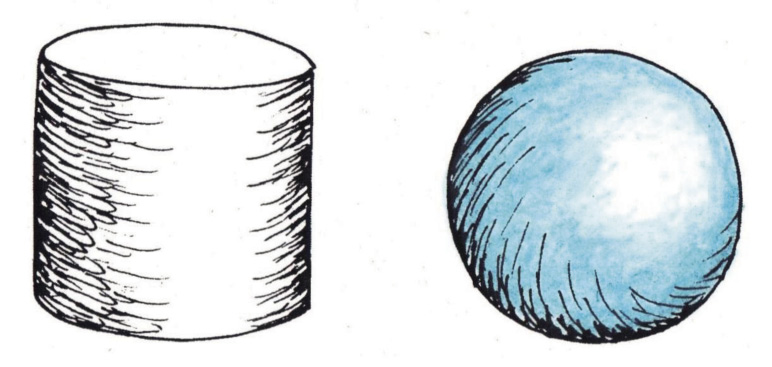Figuur 10: Beskaduwing help om dinge meer 3D te laat voorkom.
Fi gure 11: Om die lyne voor en bo-op donkerder
gure 11: Om die lyne voor en bo-op donkerder
te maak help ook om ’n tekening meer 3D te laat lyk.
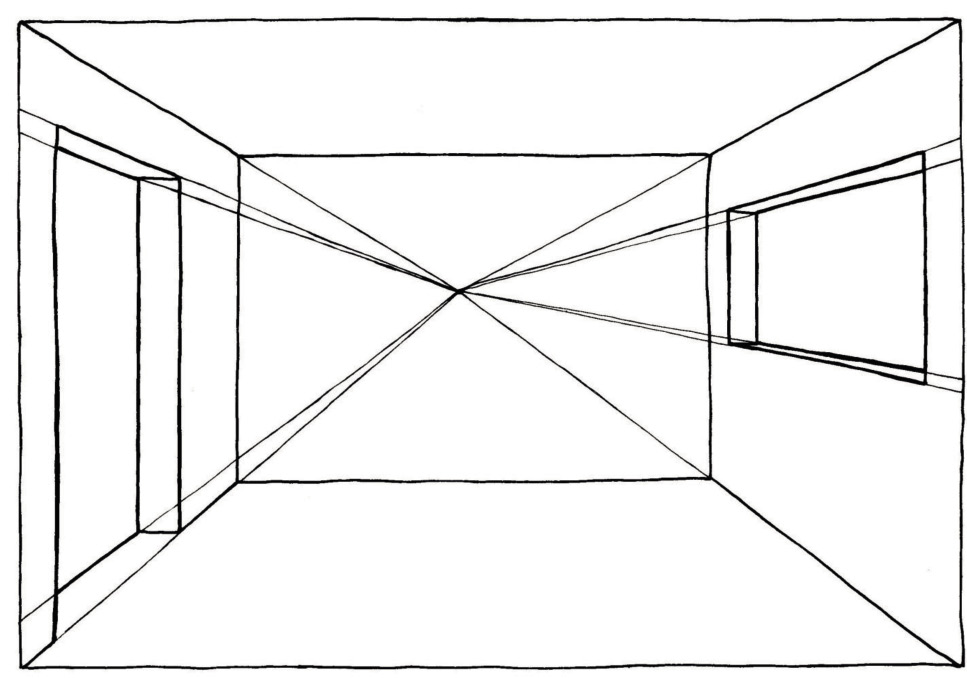
Figuur 12: Enkel verdwynpunt perspektieftekening van die binnekant van ’n klaskamer
Maak nou jou eie tekening van jou klaskamer. Moenie oor die banke, meubels en ander leerders bekommerd wees nie. Konsentreer slegs op die konstruksie van die mure, die vloer en die plafon. Dit sal jou help om reg agter in die klas te sit. Indien dit nie so is nie, kan jy ’n paar minute daar gaan staan om ’n idee te kry oor hoe die lyne na ’n punt weg van jou oë af beweeg. Gaan dan terug na jou bank en teken die skets binne die raam op die volgende bladsy.
Teken jou klaskamer hier:
|
|
Evalueer nou jou skets. Vergelyk dit met figuur 12.
- • Dink jy jou skets is akkuraat?
- • As jy die lyne voltooi, sal hulle by ’n verdwynpunt ontmoet?
- • Indien nie, wat dink jy het jy verkeerd gedoen? Hoe kan jy die tekening regmaak?
Wys jou skets vir ’n ander leerder, en evalueer ook sy of haar skets deur dieselfde vrae as hierbo te gebruik.
Om verdwynpunte en die teken van perspektieftekeninge te verstaan, is baie belangrik vir enige tekenprojek. Met ’n bietjie oefening kan jy baie bedrewe raak met hierdie soort tekening en jy sal vind dat dit jou ook in jou ander vakke help.
Volgende week
Volgende week gaan jy met jou mini-PAT vir hierdie kwartaal begin. Jy gaan ’n model van ’n wipbakvragmotor bou.
Hierdie hoofstuk is ’n formele assesseringstaak. Dit behoort jou drie weke, van week 7 tot 9 te neem om te voltooi. Die scenario: Maria se konstruksiemaatskappy het ’n nuwe wipbakvragmotor nodig.
Week 1
Wat is die probleem? 154
Week 2
Ontwerp jou wipbakvragmotor 164
Week 3
Sit die model van die wipbakvragmotor inmekaar 170
Assessering
Ondersoek:
Hoe om ’n klap aan die laaibak vas te sit sodat dit vanself oopswaai as die laaibak gekantel
word (vraag 1, 2, 3(B) & 4) [9]
Hoe om wiele en ’n vragmotorbakwerk te maak (vrae 1 & 2) [5]
Ontwerp:
Ontwerpopdrag [5]
Hoe om ’n klap aan die laaibak vas te sit sodat dit vanself oopswaai as die laaibak
gekantel word (vraag 5) [5]
Ontwerp al die onderdele van die wipbakvragmotor (gekose skets) [6]
Maak:
Maak gereed om die onderdele te maak [6]
Maak jou deel van die onderdele [12]
Sit die wipbakvragmotormodel inmekaar [12]
Ortografiese eerstehoekse projeksie (werkstekening) [10]
[Totaal: 70 punte]
Week 1
Wat is die probleem? (30 minute)
Maria is klaar met skool en wil graag meer oor die konstruksie-industrie leer. Uiteindelik wil sy haar eie konstruksiemaatskappy hê.
Individuele werk
1. Wie kan Maria help om aan die gang te kom? Met ander woorde, met watter soort mense moet sy gaan gesels om haar met haar planne te help?
2. Watter bekwaamhede en vaardighede sal Maria nodig hê om huise te ontwerp en te bou?
3. Watter tipe toerusting sal haar maatskappy nodig hê om huise te bou?

Masjiene wat konstruksiemaatskappye gebruik
Die masjien in die foto hieronder word ’n mini-laaimasjien genoem. Bouers gebruik dit om materiaal op ’n bouperseel rond te skuif.

Figuur 2
Dit het ’n skop voor, wat die bestuurder in ’n hoop sand kan indruk. Dan hys die arms van die laaimasjien die vrag sand in die lug op.
Dit gebruik dieselbrandstof in die enjin as energiebron. Die enjin draai ’n kragtige pomp wat hidrouliese olie deur die rubberslange en suiers pomp.
Op watter wyse lig hierdie mini-laaimasjien sy arms op? Met ander woorde, stel vas watter onderdele in hierdie masjien die arms laat oplig. Wat is die name van hierdie onderdele?
Maria gaan ’n groot wipbakvragmotor nodig hê om sand by verskillende boupersele af te lewer. Dit kan gevaarlik wees wanneer ’n groot wipbakvragmotor sy vrag aflaai. Die vrag klippe, gruis of sand is baie swaar, en as die laaibak gekantel word, stort die vrag vinnig uit. Mense wat naby aan die agterkant van die vragmotor staan, kan beseer word wanneer die swaar vrag uitgestort word.
Mense moet daarom opgelei word om versigtig te werk in die omgewing van wipbakvragmotors. ’n Wipbakvragmotor moet toegerus wees met waarskuwingsligte en biepers sodat almal in die omgewing weet as die laaibak gekantel word.
Maria het ’n model van ’n wipbakvragmotor nodig om haar personeel op te lei hoe om veilig te wees wanneer hulle in die omgewing van die wipbakvragmotor werk.
Ontwerpopdrag
1. Skryf die ontwerpopdrag deur hierdie sin in die spasie hieronder oor te skryf en te voltooi:
Ek gaan my groep help om ’n ………… te ontwerp en ’n ………… te maak, wat sal .........(1)
Kyk na die foto van ‘n wipbakvragmotor op bladsy 159. Die klap agter gaan self oop wanneer die bak lig. Daar is geen slotte en grendels om dit oop en toe te maak nie.
2. Skryf die spesifikasies neer.(2)
3. Skryf die beperkings neer. Onthou dat die beperkings die gereedskap, materiale en tyd is wat jy tot jou beskikking het om die model te maak.(2)
4. Stel spanne van vier saam en vergelyk julle spesifikasies. Totaal [5]

Hoe om verskillende onderdele van ’n wipbakvragmotor te maak(3 × 30 minute = 90 minute)
Gedurende hierdie en die volgende les gaan jy oefen om die verskillende onderdele van ’n model van ’n wipbakvragmotor te maak.
Kyk na die foto van ’n wipbakvragmotor hieronder.
 Figuur 3
Figuur 3
Hoe om die laaibak aan die onderstel van die vragmotor vas te heg
Daar word sand in die vragmotor se laaibak gelaai. Die laaibak en die onderstel van die vragmotor moet op so ’n wyse monteer word sodat die laaibak kan oplig, soos in die foto hier bo gewys word.
Jy kan dit van twee bokse maak. Die tekeninge hier regs wys verskillende maniere hoe dit gedoen kan word.
Verbind die boonste boks aan die onderste boks met twee skarniere, sodat die boks aan die een kant kan oplig. Deure en vensters het skarniere wat hulle toelaat om oop te maak en toe te maak.

Figuur 4
A
B
Hoe om ’n hidrouliese stelsel te gebruik om die laaibak te laat kantel
As ’n wipbakvragmotor sy vrag aflaai, lig die een kant van die laaibak op, maar bly die ander punt bly op dieselfde hoogte. ’n Ander manier om dit te sê is dat die bak teen ’n helling opwaarts kantel. Die tekening hier regs wys hoe jy iets met die gebruik van ’n hidrouliese stelsel opwaarts kan laat kantel.

Figuur 5
Soos jy in die prent hierbo kan sien, het jy ’n sterk boks en ’n stywe stuk karton nodig. Gebruik sterk kleefband om die plat stuk karton aan die kartonboks vas te heg. Maak die klein gaatjie wat jy in die kant van die boks sien. Jy het twee plastiek spuite en ’n stuk plastiekpyp nodig, soos dié wat jy vir party van die aktiwiteite in hoofstuk 5 gebruik het. Die spuit waar die insetkrag toegepas word, noem ons die insetsuier, en die spuit waar die uitsetkrag verkry sal word, noem ons die uitsetsuier.
Vul nou die insetspuit en die plastiekpyp met water. Beweeg die uitsetsuier na die “onder”-posisie. Druk die punt van die pyp deur die agterkant van die boks en druk dit oor die uitlaat van die uitsetsuier. Die pyp moet deur die gat in die agterkant van die boks gaan, maar die uitsetspuit moet los wees, sodat dit na bo of na onder kan wys.
Kyk na die tekening bo aan die volgende bladsy. Plaas ’n stukkie wondergom onder die kartonvel sodat die uitsetsuier daarteen kan druk.
Wees versigtig
Die karton moenie nat word nie, want dit sal pap en swak word.
Druk die insetsuier sodat die plat kop van die uitsetsuier opwaarts druk en die kartonvel opwaarts laat swaai. Lig die kartonvel ver genoeg op?
Voeg meer stukkies Prestik by en kry die beste posisie om die plat kop van die uitsetsuier vas te sit. Die kartonvel moet teen ’n hoek van 30° of meer opwaarts kantel.
Kry die beste posisie vir die wondergom en meet die afstand van die skarnier af, sodat jy dit kan onthou.

Figuur 6
Kry jy ’n meganiese voordeel?
Jou hidrouliese stelsel moet aan jou ’n meganiese voordeel gee. Met ander woorde, die uitsetkrag moet groter as die insetkrag wees.
1. Moet die suier onder die laaibak dikker, dieselfde of dunner as die insetsuier wees? Gee ’n rede vir jou antwoord.
Verstel nou jou stelsel sodat die insetsuier die uitsetsuier laat beweeg. Maak seker dat die uitsetsuier nie heeltemal uit sy silinder beweeg nie.
Maak seker dat die karton aan die agterkant van die boks nie nat word nie.
2. Die rugkant van die boks moet sterk en
stewig wees. Waarom?
3. Voltooi die tekening hier regs. Die groen lyne wys jou waar die uitsetsuier is as die karton onder is. Teken nou weer die suier met ’n potlood op dieselfde tekening. Wys sy posisie as hy die karton opgestoot het.

Figuur 7

Hoe om ’n klap aan die laaibak vas te sit sodat dit vanself oopswaai as die laaibak na bo kantel
Kies ’n boks om die laaibak voor te stel. Die sand moet uitval as die laaibak teen 30° opwaarts kantel, maar as die vragmotor op die pad ry, moet die klap die sand binne hou. Die klap het nie handvatsels of slotte om dit toe te hou nie, maar moet vanself toe bly.
Dink hoe jy so ’n klap vir die vragmotor kan maak. Kyk weer goed na figuur 3 om jou te help. Die volgende vrae oor figuur 3 sal jou ook help.
1. Kyk na die posisie van die skarnier waaraan die klap swaai. Waarom is die skarnier juis op daardie posisie geplaas? Hoekom het die klap arms wat vorentoe strek tot by die die skarnier?
(3)
2. Kyk na die kettings wat van die arms van die klap na die vragmotor se onderstel gaan. Wat is die doel van hierdie kettings?
(3)
3. Maak ’n tekening van hoe die laaibak en die klap sal lyk as die laaibak plat is. Met ander woorde, hoe lyk die laaibak as die vragmotor op die pad ry, met die laaibak nie opgelig nie?
|
|
Kyk na die prent van ’n wipbakvragmotor hieronder. Gee spesiale aandag aan die klap aan die agterkant van die laaibak.

Figuur 8
4. Sal die klap van hierdie laaibak die sand binne hou as die vragmotor besig is om te ry? Verduidelik jou antwoord. Jy kan ook ’n tekening gebruik om jou antwoord te verduidelik.
(3)
Totaal [9]
5. Maak ’n klap vir die laaibak van jou model van ’n wipbakvragmotor. Maak dan hieronder ’n rowwe skets van jou ontwerp van die klap. Totaal [5]
|
|
Hoe om ’n skakelaar te maak wat na “aan” beweeg as die laaibak opwaarts kantel
Die vragmotor het ’n stroombaan nodig wat die bestuurder sal waarsku as die vrag beweeg. Kyk na die stroombaan hier regs, wat normaalweg oop is. “Normaalweg oop” beteken dat die skakelaar nie die stroombaan voltooi as iets nie op die veerkragtige metaalstrook druk nie.

Figuur 9
Verander die ontwerp van die skakelaar sodat dit “normaalweg geslote” is. Die gewig van die vrag behoort die skakelaar oop of “af” te hou, sodat dit nie die stroombaan kan voltooi nie. As die bak opwaarts gaan, moet die skakelaar die stroombaan voltooi. Dan sal die LED lig skyn en die bieper sal biep.
1. Teken jou idee van ’n “normaalweg geslote” skakelaar hieronder. Wys die laaibak in die onder-posisie, besig om die skakelaar oop te hou. Jy hoef nie die hele vragmotor te teken nie, net die deel wat die skakelaar na onder druk.
|
|
Hoe om wiele en ’n vragmotorbakwerk te maak
Die sketse hieronder wys hoe om wiele met plastiek bottelproppe te maak, en hoe om die wiele aan die boks wat die vragmotor se bakwerk voorstel vas te heg.
 Figuur 10 Figuur 11
Figuur 10 Figuur 11
Daar moet genoeg in die vragmotor se bakwerk wees vir die hidrouliese spuit om te beweeg. Die bakwerk moet ook plek vir die skarnier hê.
1. Kyk na die wiele van die vragmotor in figuur 3. Vragmotors wat swaar vragte dra, moet wiele hê wat sterk is, maar ook breed. Hoekom moet die buitebande breed wees?
(2)
2. Hoe kan jy verseker dat die wiele vry kan draai?
(3)
Totaal [5]
3. Die vragmotor moet genoeg plek hê vir die hidrouliese spuit om te weeg. Dit moet ook plek hê vir die skarniere. Maak ’n skets van die boks wat jy vir die vragmotor se bakwerk gaan gebruik en wys die spuit en die skarniere op hierdie skets.
|
|
Week 2
Ontwerp julle wipbakvragmotor (30 minute)
Julle gaan in groepe van drie of vier werk om die verskillende onderdele van ’n model van ’n wipbakvragmotor te maak. Die onderdele moet presies inmekaar pas, sodat julle uiteindelik ’n werkende model van ’n wipbakvragmotor aanmekaar kan sit.
Elke lid van die groep gaan slegs een onderdeel van die model maak.
Ontwerp al die onderdele van die wipbakvragmotor
Teken jou ontwerp op die volgende bladsye. Voorsien elke tekening van ’n opskrif om te wys waaroor die tekening gaan. Gebruik ook byskrifte om te wys wat die verskillende onderdele van die tekening is.
Gebruik jou liniaal en wys die afmetings van onderdele op jou tekening. Die afmetings is belangrik, want die onderdeel of onderdele wat jy maak, moet pas in onderdele wat ander lede van jou groep besig is om te maak.
As jy die waarskuwingstroombaan gaan maak, moet jy eers ’n stroombaandiagram teken, en ook ’n skets maak van hoe die stroombaan in die werklikheid sal lyk. Jy moet jou stroombaan so beplan dat die skakelaar onder die laaibak sal wees, en jy iewers ’n plek het om die battery weg te steek.
As jy ’n beter idee kry, moenie die aanvanklike sketse weggooi nie. Hou al jou ou sketse en aantekeninge bymekaar. Jou onderwyser sal jou assesseer op grond van hoeveel jou idees verbeter het. Gebruik los papiervelle as jy meer spasie nodig het om tekeninge van beter idees te maak.
Totaal [6]
|
|
|
|
|
|
|
|
Spanvergadering oor die ontwerp (30 minute)
Julle werk in groepe van drie of vier leerders elk. Elke leerder gaan slegs spesifieke onderdele van die wipbakvragmotor maak en uiteindelik moet al die onderdele inmekaar pas.
Verdeel die werk onder julle. Gee byvoorbeeld vir elke leerder een van die volgende onderdele om te maak:
- • die laaibak en die vragmotor se bakwerk, die skarniere tussen hulle, en die hidrouliese stelsel;
- • die laaibak se klap en die kajuit van die vragmotor; of
- • die skakelaar vir die waarskuwingsbieper en -liggie, en die vragmotor se wiele en asse.
As ’n span moet julle die vorms en afmetings van die onderskeie onderdele kontroleer om seker te maak dat alles inmekaar sal pas. Slegs dan kan julle begin om die onderskeie onderdele afsonderlik te maak. As hulle nie bymekaar pas nie, moet die ontwerpe aangepas word om hulle te laat pas.
Individuele werk: maak gereed om julle onderdele te maak
Elkeen moet self die volgende sinne voltooi:
1. Ek maak …
2. Ek benodig die volgende materiale:
Daar is beperkings op die materiale wat julle kan gebruik. Julle kan net materiale gebruik wat julle in die hande kan kry.
(3)
3. Ek benodig die volgende gereedskap:
Daar is beperkings op die gereedskap wat julle kan gebruik. Julle kan slegs gereedskap gebruik wat julle in die hande kan kry en wat veilig is om mee te werk
(3)
Totaal [6]
Maak jou onderdeel of onderdele (2 × 30 min = 60 minute)
Begin werk aan jou onderdeel, maar kontroleer met ander in die groep dat al die onderdele inmekaar sal pas. Maak nuwe sketse indien nodig. Totaal [12]
|
|
Week 3
Sit die model van die wipbakvragmotor inmekaar
(2 × 30 min = 60 minute)
Voeg nou al die onderdele saam om die hele vragmotor te vorm. Wees versigtig wanneer julle die onderdele inmekaarsit. Party onderdele sal dalk nie presies bymekaar pas nie. Moenie hulle saam dwing nie, want dit kan beide onderdele breek. Dit sal makliker wees om net een van die onderdele te verander deur dit versigtig te sny, of ’n klein stukkie met gom aan te plak.
Die prent hier regs is ’n voorbeeld van ’n wipbakvragmotor wat iemand gemaak het. Julle model kan anders lyk as hierdie een en kan ook beter werk as hierdie model. Totaal [12]

Figuur 12
Die aanbieding van julle projek (2 × 30 min = 60 minute)
Julle span sal vyf minute hê om julle ontwerp te verduidelik en julle tekeninge vir die res van die klas te wys.
Elke spanlid moet die beste sketse wat hy of sy van onderdele gemaak het aan die klas wys.
Drie nuwe tekeninge moet van die voltooide vragmotor gemaak word. Julle moet as span besluit wie elk van die volgende tekeninge gaan maak:
- • ’n Artistiese, driedimensionele tekening wat die voltooide wipbakvragmotor, met die laaibak na bo gekantel, van voor af wys.
- • ’n Artistiese, driedimensionele tekening wat die voltooide wipbakvragmotor, met die laaibak na bo gekantel, van agter af wys.
- • ’n Ortografiese tekening wat die vooraansig en syaansigte van die voltooide wipbakvragmotor wys. Dit word ’n “ortografiese eerstehoekprojeksie” genoem.
Die illustrasie hieronder wys hoe die model op die papier geprojekteer word om ’n ortografiese eerstehoekprojeksie te teken.
 Figuur 13
Figuur 13
Kyk na die skêr in die figuur. As jy die boks oopsny sal die sye na onder val en plat op die tafel gaan lê. Dan het jy ’n ortografiese eerstehoekprojeksie.
Op die volgende bladsy is daar ’n oefening om die ortografiese eerstehoekprojeksie van die vragmotor te voltooi.
Die syaansig is vir jou geteken. Gebruik die rooi projeksielyne en voltooi die bo-aansig van die vragmotor. Gebruik dan die blou lyne en voltooi die vooraansig. Laastens voeg jy die byskrifte by vir die “vooraansig”, “bo-aansig” en “sy-aansig” op jou tekening.
Totaal [10]

Figuur 14
Evalueer jou model
As jy ’n model evalueer, vra jy vrae daaroor. Die meeste van die vrae het betrekking op die spesifikasies. Blaai terug en lees weer die spesifikasies.
- • Het die vragmotor vier wiele wat breed genoeg lyk om ’n swaar vrag te dra?
- • Het die vragmotor ’n kajuit vir die bestuurder?
- • Kan die vragmotor ’n eetlepel sand karwei?
- • Kan die laaibak met ’n hidrouliese stelsel opgelig word?
- • Wat is die grootste hoek wat dit kan bereik?
- • Kan die vrag by die klap aan die agterkant van die laaibak uitgly?
- • Hoor jy ’n bieper, of begin ’n LED-liggie skyn, as die laaibak gekantel word?
- • Gee die hidrouliese stelsels vir jou ’n meganiese voordeel?
- • Teoreties gesproke, wat is die meganiese voordeel van die hidrouliese stelsel? Daar is ’n hoë mate van wrywing binne die spuite, daarom is die werklike meganiese voordeel minder as die teoretiese meganiese voordeel.
Volgende kwartaal
Geniet jou wintervakansie. Na die vakansie gaan julle meer leer oor elektriese stroombane en die onderdele wat binne elektriese stroombane gebruik kan word.